Amazon Web Services
Lo principal es crear una cuenta en Amazon Web Services, por lo cual no dirigimos a la pagina oficial. Amazon Web Service
En la opcion de abrir una cuenta. 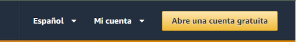
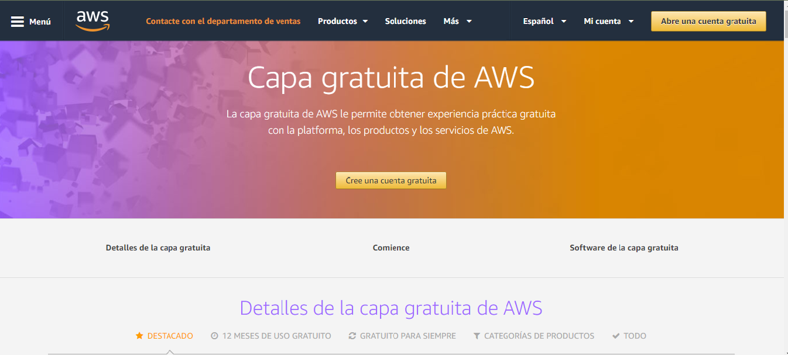 *Llenado de Formulario (datos personales).
El primer paso es tener tu página un poco avanzada y sino es que terminada para que puedas ver con calma los pasos para hacer tu cuenta en Amazon Web Services y agregar el servicio de los Docker y GitHub, esto varía dependiendo del proyecto que tengas que hacer claro está. Y empezamos como cualquier otro ejercicio estar en la página correcta en este caso https://aws.amazon.com/es ya estando dentro darle clic en registrar o crear una cuenta gratuita para después seguir con el llenado del formulario de datos personales como se muestra a continuación.
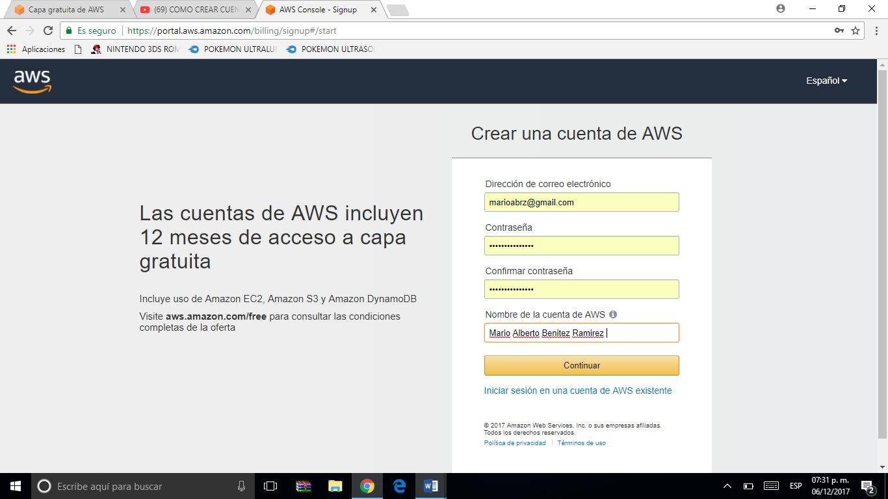Información de Pago
Después de llenar el formulario de datos personales entramos a la sección de información de pago. Aquí es donde ingresaremos los datos de nuestra tarjeta, esta debe de contar con saldo ya que, aunque es un registro gratuito cobran un dólar para que puedas usar los servicios de Amazon, son 752 horas gratuitas si te excedes de este limite el servidor procederá a cobrarte automáticamente (cuidado al agotar tus horas free).
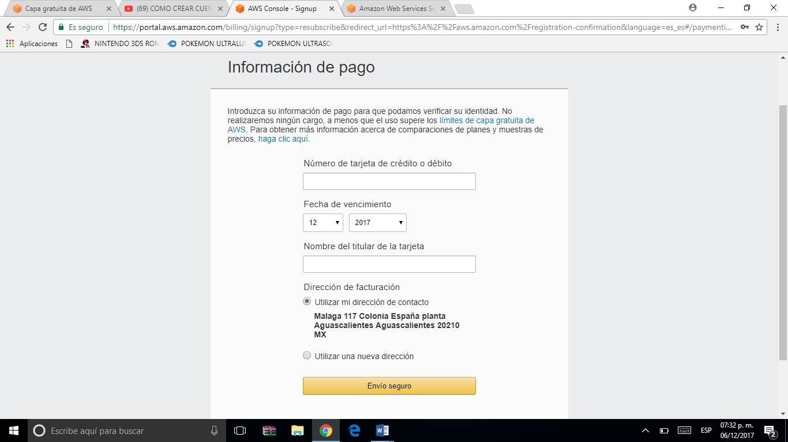Verificación y Autenticación del Registro.
Si paso tu número de tarjeta viene el paso de verificación, en donde si todo salió bien te aparecerá un PIN.
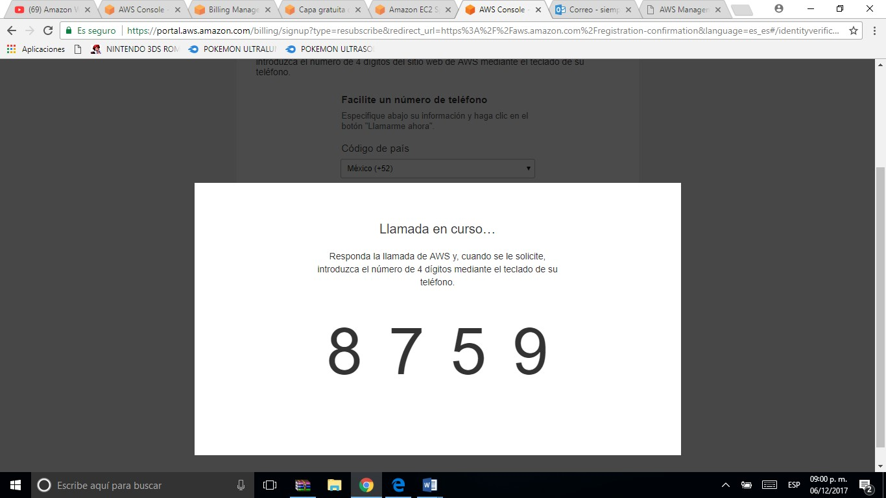Después de algunos segundos entrara una llamada de un numero raro, que es de los servidores de Amazon donde con el teclado del celular tendrás que escribir el anterior PIN para confirmas el último proceso de registro.
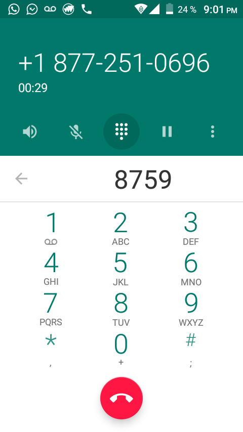 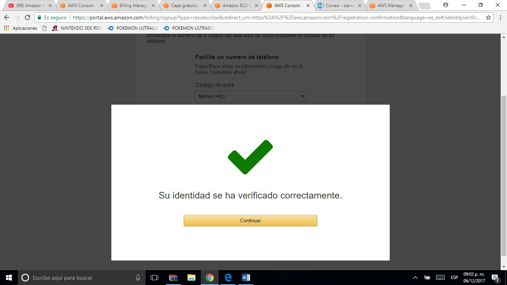Y listo ya tienes tu cuenta verificada y creada en Amazon Web Services!!!
Bienvenida 'Amazon Web Services'.
En esta parte solo llenas dos campos de tu posición laboral en la que te encuentras y en lo que es de tu interés, para que Amazon pueda darte información, ayuda y material sobre lo que más te interés.
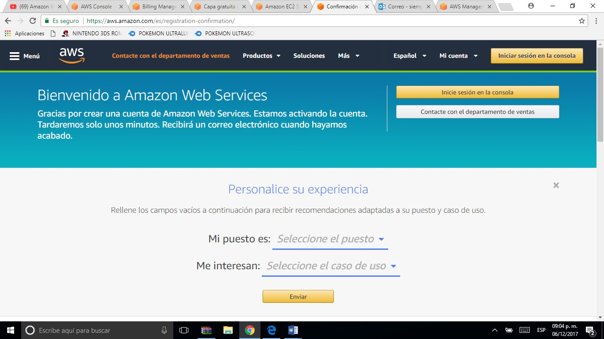 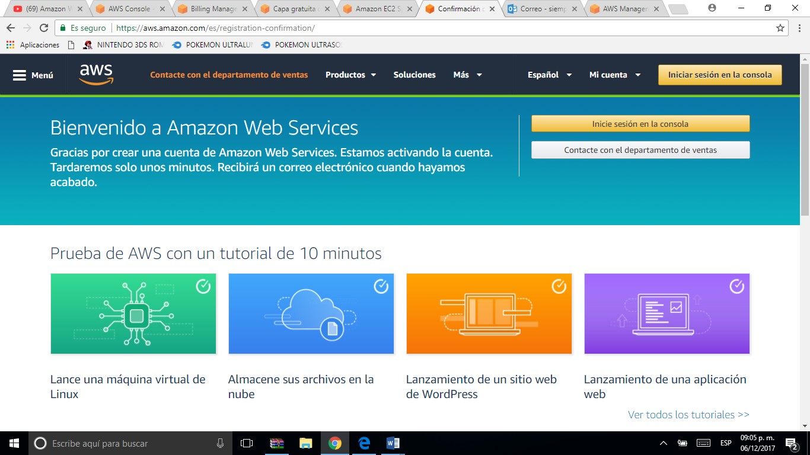Verificacion de Correo Electronico.
Aquí se sigue con el protocolo de cualquier registro de alguna página, software o red social que es verificar la cuenta de tu e-mail por medio del link que te proporcionan en el correo que te mandan.
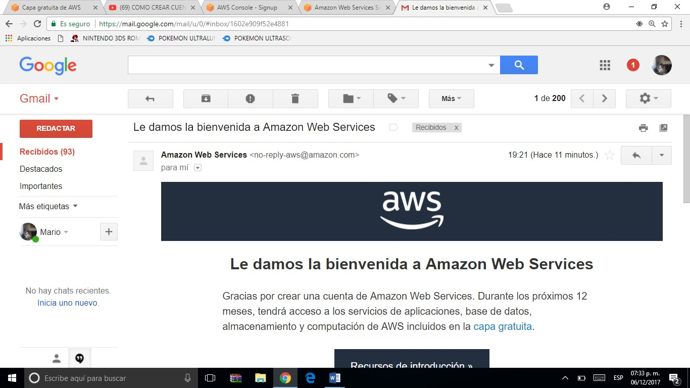Y despues te da la confirmacion de que legalmente ya formas parte de la comunidad Amazon Web Services y con esto puedes usar todos los servicios que este te ofrece, alguna desventaja de esto que los servicios y todo te debes de esperar minimo 12 horas y maximo 24 para que puedas realmente utilizarlo, esto puede hacer que tengas varios contratiempos, pero puedes aprovechar para ver los tutoriales y la informacion sobre como usar los servicios y servidores de Amazon. Y a su vez si la respuesta no llega cumpliendose las 24 horas reportar rapidamente para una posible imediata solucion.
Mientras tanto.
Puedes continuar investigando acerca de como funcionan los servicios y servidores, las credenciales, la creacion de usuarios y grupos etc. y de igual manera ver que tus datos e informacion estan correctos ya que a continuacion iniciaremos con el proceso del GitHub y esta cuenta la utilizaremos para poder completar la conexión.
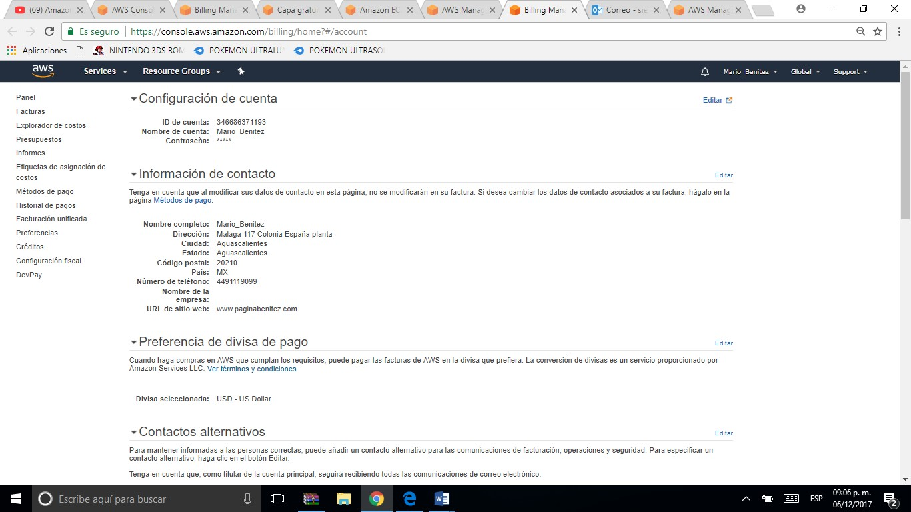